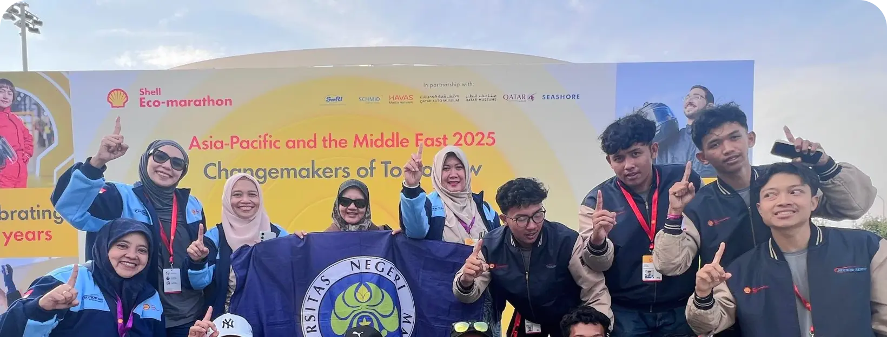

Custom Button Elements (Hover Interactivity)
Element button sesuai spesifikasi regulasi branding UM tanpa ikon di sebelah kanan.
Tab-Menu Fragment (Desktop & Responsive Mobile)
Fragment tab menu interaktif dengan navigasi vertikal/horizontal dan konten panel responsive.
Profil Singkat Program
Universitas Negeri Malang (UM) berkomitmen menyelenggarakan pendidikan tinggi berkualitas dunia dengan landasan nilai-nilai keunggulan, inovasi, dan pengabdian masyarakat. Program ini dirancang untuk membekali mahasiswa dengan keahlian teknis mutakhir serta kompetensi kepemimpinan adaptif.
Melalui kurikulum berbasis capaian (Outcome-Based Education) dan ekosistem riset terintegrasi, lulusan siap bersaing secara global dalam era transformasi digital.
Prospek Karir & Alumni
Lulusan memiliki jangkauan karir yang luas di berbagai industri strategis, lembaga pemerintah, startup teknologi, hingga institusi internasional. Jalur karir mencakup Web Developer, UI/UX Designer, System Architect, Digital Strategist, dan Technology Consultant.
Kemitraan luas UM dengan dunia industri memastikan tingkat penyerapan kerja lulusan tinggi dengan daya saing kompetitif.
Kurikulum & Struktur Pembelajaran
Struktur kurikulum mencakup mata kuliah keahlian inti, laboratorium praktikal, proyek kolaboratif, serta program Merdeka Belajar Kampus Merdeka (MBKM) seperti magang industri dan riset independen.
Fasilitas & Infrastruktur
Didukung oleh laboratorium komputer generasi terbaru, ruang kolaborasi kreatif, perpustakaan digital berakses jurnal internasional, serta jaringan internet terdistribusi di seluruh kawasan kampus.
Kalender Akademik & Tanggal Penting (JS Object Parser)
Visualisasi data objek JavaScript Kalender Akademik 2026/2027 menjadi widget kalender & daftar kegiatan.
Juli 2026
Tanggal Penting
Semester Gasal 2026/2027Card Element with Hover Overlay & 12-Column Grid System
Komponen card interaktif dengan overlay "Lihat Selengkapnya" saat dihover, serta sistem grid 4 baris 12 kolom.
Card Prestasi (Hover Effect Preview)

Prestasi
Prestasi mahasiswa, dosen, dan tenaga kependidikan Universitas Negeri Malang mencerminkan semangat berkarya, berinovasi, serta mengharumkan nama institusi di tingkat global.
System Grid Style (4 Baris 12 Kolom)
Folkcast Media Cards (API Integration)
Dynamic cards yang dirender dari data API WordPress Folkcast Brand UM.